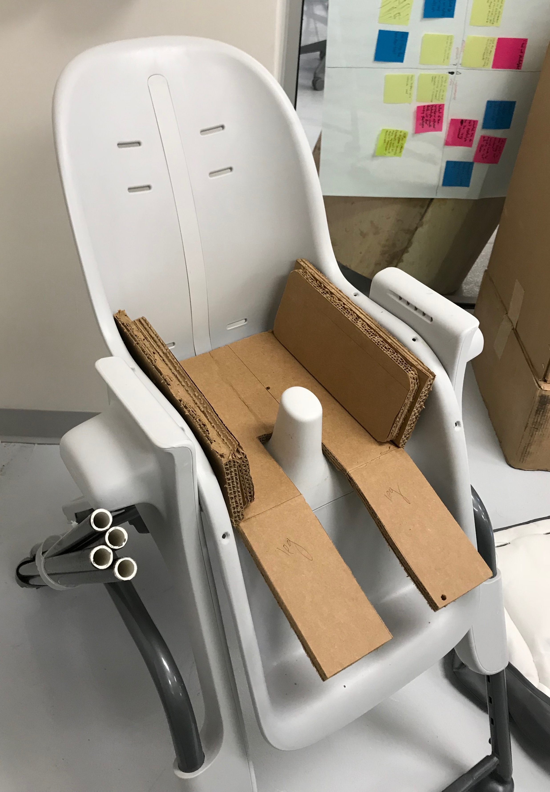
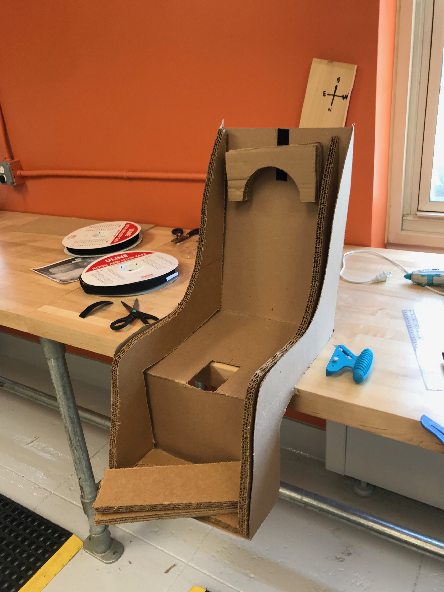
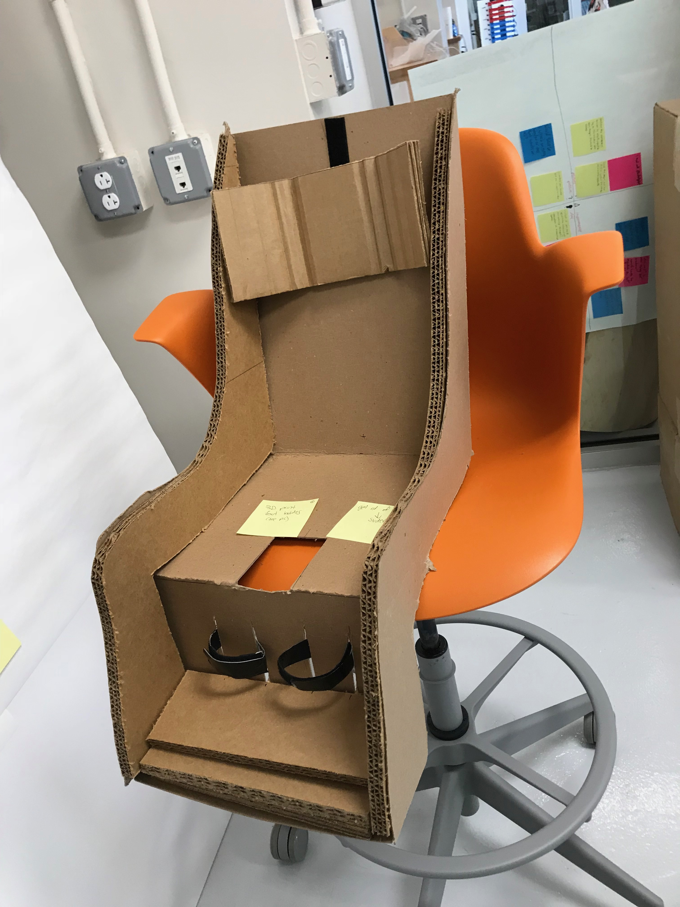
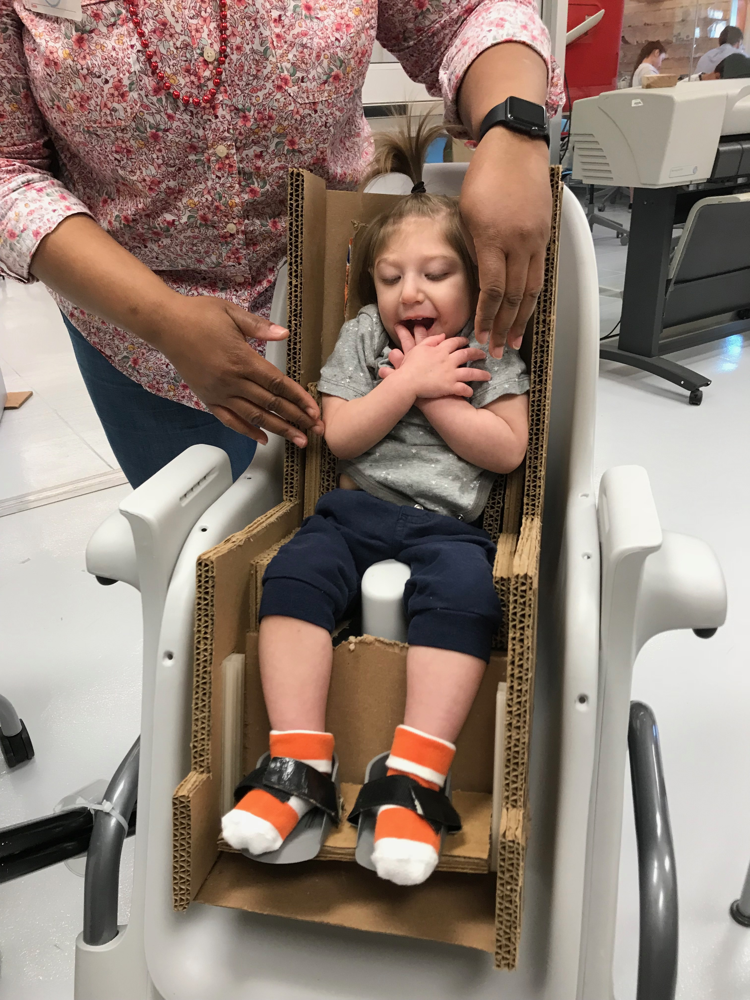
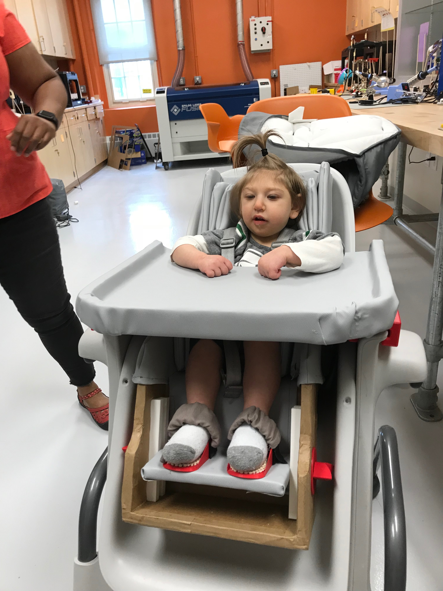

Highchair Insert
This adaptive piece was created alongside an
LED Spoon Attachment. As seen below in his original high chair, Yehuda is clearly too small for the chair, so he tends to slouch over and cannot keep his body in alignment. Over the course of approximatly three weeks, I went through four full-size prototypes (along with many smaller ones for various parts of the chair) as I met with the family every few days to offer my newest ideas and to gather the mother and therapists' feedback. I learned that the design process is not about designing a fancy product; it's about designing with and for the user to meet their needs.
I gained skills and learned about many design apsects throughout this project: sewing, 3D modeling and printing, user feedback, the iterative design process, and more.
YEAR
2018
PLATFORM
Fusion 360, Sewing Machine, Cardboard
Process
The final deliverable product had to help Yehuda sit upright in his chair. The challenge with this project was to create something that could grow with him so it can be used throughout his childhood.
First Prototype: Low Fidelity
A basic prototype was created to show the mother how to hip inserts would work. A simple velcro system would allow the padding to be removed at any time.

Second Prototype: Medium Fidelity
This prototype allowed me to test out various neck/head support options alow with the leg support. Triple-ply cardboard is a great way to prototype in an easy, fast, and cheap way.


Third Prototype: High Fidelity
This final prototype with the child in it allowed for final feature testing and sizing changes.

Final Product
